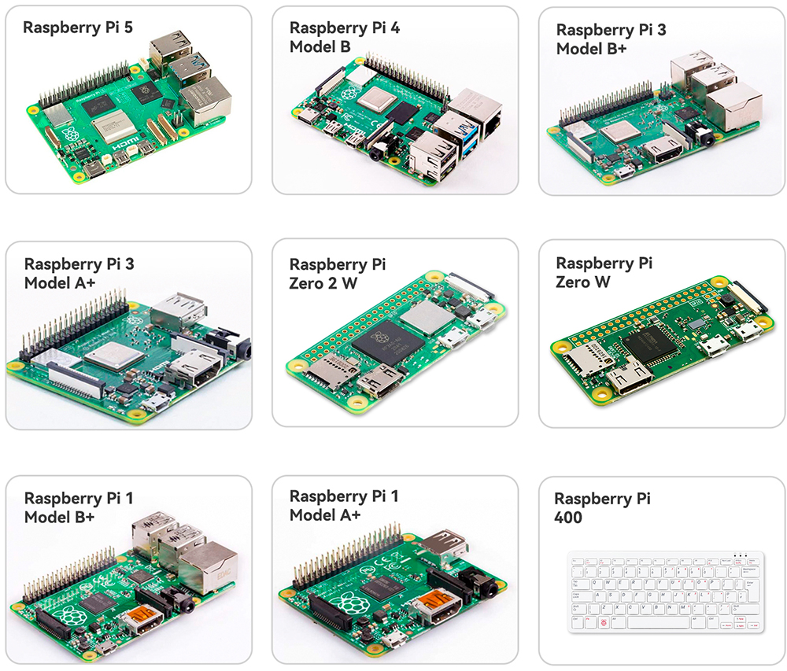

Bemerkung
Hallo und willkommen in der SunFounder Raspberry Pi & Arduino & ESP32 Enthusiasten-Gemeinschaft auf Facebook! Tauchen Sie tiefer ein in die Welt von Raspberry Pi, Arduino und ESP32 mit anderen Enthusiasten.
Warum beitreten?
Expertenunterstützung: Lösen Sie Nachverkaufsprobleme und technische Herausforderungen mit Hilfe unserer Gemeinschaft und unseres Teams.
Lernen & Teilen: Tauschen Sie Tipps und Anleitungen aus, um Ihre Fähigkeiten zu verbessern.
Exklusive Vorschauen: Erhalten Sie frühzeitigen Zugang zu neuen Produktankündigungen und exklusiven Einblicken.
Spezialrabatte: Genießen Sie exklusive Rabatte auf unsere neuesten Produkte.
Festliche Aktionen und Gewinnspiele: Nehmen Sie an Gewinnspielen und Feiertagsaktionen teil.
👉 Sind Sie bereit, mit uns zu erkunden und zu erschaffen? Klicken Sie auf [hier] und treten Sie heute bei!
Was benötigen wir?
Erforderliche Komponenten
Raspberry Pi
Der Raspberry Pi ist ein kostengünstiger Computer im Kreditkartenformat, der an einen Computermonitor oder Fernseher angeschlossen werden kann und mit einer Standardtastatur und -maus bedient wird. Es handelt sich um ein leistungsfähiges kleines Gerät, mit dem Menschen jeden Alters die Informatik erkunden und Programmiersprachen wie Scratch und Python erlernen können.
Netzadapter
Um den Raspberry Pi mit Strom zu versorgen, verfügt er über einen Micro-USB-Anschluss (den gleichen, den viele Handys haben). Sie benötigen ein Netzteil, das mindestens 2,5 Ampere liefert.
Micro-SD-Karte
Ihr Raspberry Pi benötigt eine Micro-SD-Karte, um alle seine Dateien und das Raspberry Pi OS zu speichern. Sie benötigen eine Micro-SD-Karte mit einer Kapazität von mindestens 8 GB.
Optionale Komponenten
Bildschirm
Um die Desktop-Umgebung des Raspberry Pi anzuzeigen, benötigen Sie einen Bildschirm, das kann ein Fernsehbildschirm oder ein Computermonitor sein. Wenn der Bildschirm eingebaute Lautsprecher hat, gibt der Pi Töne über diese aus.
Maus & Tastatur
Wenn Sie einen Bildschirm verwenden, benötigen Sie auch eine USB-Tastatur und eine USB-Maus.
HDMI
Der Raspberry Pi verfügt über einen HDMI-Ausgang, der mit den HDMI-Anschlüssen der meisten modernen Fernseher und Computermonitore kompatibel ist. Wenn Ihr Bildschirm nur DVI- oder VGA-Anschlüsse hat, benötigen Sie das entsprechende Konvertierungskabel.
Gehäuse
Sie können den Raspberry Pi in ein Gehäuse setzen, um Ihr Gerät zu schützen.
Lautsprecher oder Kopfhörer
Der Raspberry Pi ist mit einem 3,5-mm-Audioanschluss ausgestattet, den Sie verwenden können, wenn Ihr Bildschirm keine eingebauten Lautsprecher hat oder wenn kein Bildschirmbetrieb vorhanden ist.